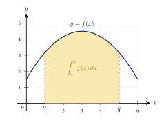

Capítulo 42
La integral
UNAM IPN
La integración permite recuperar una función a partir de su derivada y calcular cantidades acumuladas.
Sus aplicaciones principales incluyen:
- encontrar antiderivadas;
- recuperar una función a partir de su razón de cambio;
- calcular desplazamientos;
- calcular áreas bajo una curva;
- resolver problemas de acumulación.
42.1 Antiderivada o primitiva#
Una función \(F\) es una antiderivada o primitiva de \(f\) si:
Por ejemplo, como:
una antiderivada de \(2x\) es:
Sin embargo, también se cumple:
y:
Esto ocurre porque la derivada de cualquier constante es cero.
Si \(F\) es una antiderivada de \(f\), entonces todas las antiderivadas de \(f\) tienen la forma:
donde \(C\) es una constante real.
La integral indefinida se escribe:
En esta expresión:
- \(\displaystyle\int\) es el signo de integral;
- \(f(x)\) es el integrando;
- \(dx\) indica la variable de integración;
- \(C\) es la constante de integración.
En una integral indefinida siempre debe escribirse la constante:
Omitirla significa escribir solo una antiderivada, no la familia completa.
42.2 Derivación e integración#
La derivación y la integración son operaciones inversas.
Por tanto:
También:
Calcula:
Ver solución
Buscamos una función cuya derivada sea \(2x\).
Como:
se obtiene:
Calcula:
Ver solución
Como:
se obtiene:
42.3 Propiedades de la integral indefinida#
42.3.1 Múltiplo constante#
42.3.2 Suma#
42.3.3 Resta#
Estas propiedades permiten integrar término a término.
42.4 Integrales inmediatas#
42.4.1 Constantes y potencias#
42.4.2 Funciones exponenciales#
42.4.3 Funciones trigonométricas#
La regla de la potencia no puede utilizarse directamente cuando:
En ese caso:
42.5 Regla de la potencia#
Para integrar una potencia:
- aumenta el exponente en una unidad;
- divide entre el nuevo exponente;
- agrega la constante de integración.
Calcula:
Ver solución
Aplicamos la regla de la potencia:
Por tanto:
Calcula:
Ver solución
Integramos término a término:
Por tanto:
42.6 Raíces y potencias negativas#
Antes de integrar, conviene escribir las raíces y fracciones como potencias.
Calcula:
Ver solución
Escribimos:
Aplicamos la regla de la potencia:
Por tanto:
Calcula:
Ver solución
Escribimos:
Integramos:
Por tanto:
La constante de integración se escribe una sola vez al final.
No es necesario escribir una constante diferente después de cada término.
42.7 Ejemplos de integrales inmediatas#
Calcula:
Ver solución
Integramos término a término:
Por tanto:
Calcula:
Ver solución
Por tanto:
Calcula:
Ver solución
Por tanto:
42.8 Sustitución simple#
La sustitución permite integrar una función compuesta cuando aparece una expresión y también su derivada.
Si:
entonces:
La integral:
se transforma en:
Calcula:
Ver solución
Elegimos:
Entonces:
La integral se transforma en:
Integramos:
Regresamos a la variable original:
Calcula:
Ver solución
Elegimos:
Entonces:
La integral queda:
Por tanto:
Calcula:
Ver solución
Elegimos:
Entonces:
La integral queda:
Por tanto:
Como:
también puede escribirse:
42.9 Verificación de una integral#
Una integral indefinida puede comprobarse derivando el resultado.
Comprueba:
Ver solución
Derivamos el resultado:
La derivada coincide con el integrando, por lo que el resultado es correcto.
La verificación mediante derivación es una forma rápida de detectar errores en exponentes, signos y constantes.
42.10 Condiciones iniciales#
Si se conoce:
y un valor:
la condición inicial permite encontrar la constante \(C\).
Encuentra \(f\) si:
y:
Ver solución
Integramos:
Usamos la condición:
Por tanto:
Encuentra \(f\) si:
y:
Ver solución
Integramos:
Usamos la condición inicial:
Por tanto:
42.11 Aplicación al movimiento#
Si la aceleración es:
entonces:
Si la velocidad es:
entonces:
Las condiciones iniciales permiten determinar las constantes.
La aceleración de una partícula es:
Además:
y:
Encuentra la velocidad y la posición.
Ver solución
Como:
integramos:
Usamos:
Por tanto:
Ahora:
Integramos:
Usamos:
Por tanto:
42.12 Integral definida#
La integral definida se escribe:
Los números \(a\) y \(b\) son los límites de integración.
La integral definida representa una acumulación neta entre:
y:
Geométricamente:
- las regiones sobre el eje \(x\) aportan área positiva;
- las regiones debajo del eje \(x\) aportan área negativa.

42.13 Teorema fundamental del cálculo#
Si \(F\) es una antiderivada de \(f\), entonces:
También se utiliza la notación:
En una integral definida no se escribe la constante \(C\), porque se cancela:
Calcula:
Ver solución
Una antiderivada de \(3x^2\) es:
Evaluamos:
Por tanto:
Calcula:
Ver solución
Integramos:
Evaluamos:
Por tanto:
42.14 Propiedades de la integral definida#
Si:
entonces:
También:
42.15 Área entre una curva y el eje#
Si:
en \([a,b]\), entonces el área es:
Si la función cambia de signo, el área geométrica debe calcularse separando los intervalos o utilizando:
Calcula el área limitada por:
el eje \(x\) y las rectas:
Ver solución
Como:
en \([0,3]\), el área es:
Integramos:
Por tanto:
unidades cuadradas.
La integral definida representa área neta. El área geométrica siempre se expresa como una cantidad no negativa.
42.16 Procedimiento rápido#
Integral indefinida#
- Simplifica el integrando.
- Separa sumas y restas.
- Saca las constantes fuera de la integral.
- Identifica la fórmula correspondiente.
- Integra cada término.
- Agrega: \[+C.\]
- Comprueba derivando el resultado.
Sustitución#
- Elige: \[u=g(x).\]
- Calcula: \[du=g'(x)\,dx.\]
- Reescribe toda la integral en términos de \(u\).
- Integra.
- Regresa a la variable original.
Integral definida#
- Encuentra una antiderivada \(F\).
- Evalúa el límite superior: \[F(b).\]
- Evalúa el límite inferior: \[F(a).\]
- Calcula: \[F(b)-F(a).\]
42.17 Resumen#
Integral indefinida:
Relación con la derivada:
Regla de la potencia:
Caso logarítmico:
Integral definida:
Movimiento:
42.18 Errores frecuentes#
Recuerda:
- En una integral indefinida debe escribirse: \[+C.\]
- En la regla de la potencia primero se aumenta el exponente y después se divide entre el nuevo exponente.
- La regla de la potencia no se utiliza con: \[n=-1.\]
- Se cumple: \[\int\frac{1}{x}\,dx = \ln|x|+C.\]
- Se cumple: \[\int\sen x\,dx = -\cos x+C.\]
- La constante \(C\) se escribe una sola vez.
- En una integral definida no se agrega \(C\).
- La evaluación correcta es: \[F(b)-F(a),\] no \(F(a)-F(b)\).
- La integral definida representa área neta, no siempre área geométrica.
- El resultado puede comprobarse derivando.
42.19 Ejercicios propuestos#
Calcula:
Ver solución
Por la regla de la potencia: \[\int4x^5\,dx=\frac{4x^6}{6}+C=\frac{2}{3}x^6+C.\]
Calcula:
Ver solución
Integramos término a término: \[\int(2x^3-5x+3)\,dx=\frac{2x^4}{4}-\frac{5x^2}{2}+3x+C=\frac{1}{2}x^4-\frac{5}{2}x^2+3x+C.\]
Calcula:
Ver solución
Escribiendo en forma de potencias: \[\int\left(3x^{1/2}+\frac{2}{x}\right)dx=\frac{3x^{3/2}}{3/2}+2\ln|x|+C=2x^{3/2}+2\ln|x|+C.\]
Calcula:
Ver solución
Escribimos como potencia negativa: \[\int x^{-4}\,dx=\frac{x^{-3}}{-3}+C=-\frac{1}{3x^3}+C.\]
Calcula:
Ver solución
Integramos término a término: \[\int(5\sen x+2\cos x)\,dx=-5\cos x+2\sen x+C.\]
Calcula:
Ver solución
Integramos término a término: \[\int(3e^x-\sec^2x)\,dx=3e^x-\tan x+C.\]
Calcula mediante sustitución:
Ver solución
Sea \(u=x^2+3\), entonces \(du=2x\,dx\). \[\int(x^2+3)^4(2x\,dx)=\int u^4\,du=\frac{u^5}{5}+C=\frac{(x^2+3)^5}{5}+C.\]
Calcula mediante sustitución:
Ver solución
Sea \(u=x^3+1\), entonces \(du=3x^2\,dx\). \[\int\frac{3x^2}{x^3+1}\,dx=\int\frac{1}{u}\,du=\ln|u|+C=\ln|x^3+1|+C.\]
Encuentra \(f\) si:
y:
Ver solución
Integramos la derivada: \[f(x)=\int(4x-3)\,dx=2x^2-3x+C.\] Usamos la condición inicial \(f(2)=5\): \[2(2)^2-3(2)+C=5 \implies 8-6+C=5 \implies C=3.\] Por tanto, \(f(x)=2x^2-3x+3\).
Encuentra \(f\) si:
y:
Ver solución
Integramos la derivada: \[f(x)=\int\cos x\,dx=\sen x+C.\] Usamos la condición inicial \(f\left(\frac{\pi}{2}\right)=3\): \[\sen\left(\frac{\pi}{2}\right)+C=3 \implies 1+C=3 \implies C=2.\] Por tanto, \(f(x)=\sen x+2\).
La velocidad de un móvil es:
Si:
encuentra \(s(t)\).
Ver solución
La posición es la integral de la velocidad: \[s(t)=\int(4t+1)\,dt=2t^2+t+C.\] Usamos la condición inicial \(s(0)=2\): \[s(0)=C=2.\] Por tanto, \(s(t)=2t^2+t+2\).
La aceleración de un objeto es:
Si:
y:
encuentra \(v(t)\) y \(s(t)\).
Ver solución
La velocidad es la integral de la aceleración: \[v(t)=\int(-10)\,dt=-10t+C_1.\] Como \(v(0)=0\), entonces \(C_1=0\), por lo que \(v(t)=-10t\). La posición es la integral de la velocidad: \[s(t)=\int(-10t)\,dt=-5t^2+C_2.\] Como \(s(0)=100\), entonces \(C_2=100\). Por tanto, \(v(t)=-10t\) y \(s(t)=-5t^2+100\).
Calcula:
Ver solución
Buscamos una antiderivada y evaluamos: \[\int_0^2(3x^2+1)\,dx=[x^3+x]_0^2=(2^3+2)-(0^3+0)=8+2=10.\]
Calcula:
Ver solución
Buscamos una antiderivada y evaluamos: \[\int_1^4 x^{1/2}\,dx=\left[\frac{2}{3}x^{3/2}\right]_1^4=\frac{2}{3}(4^{3/2}-1^{3/2})=\frac{2}{3}(8-1)=\frac{14}{3}.\]
Calcula el área bajo la recta:
entre:
Ver solución
Calculamos la integral definida: \[A=\int_0^3(2x+1)\,dx=[x^2+x]_0^3=(3^2+3)-(0^2+0)=9+3=12.\] El área es de \(12\) unidades cuadradas.